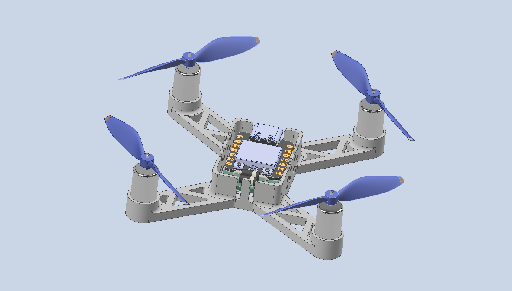
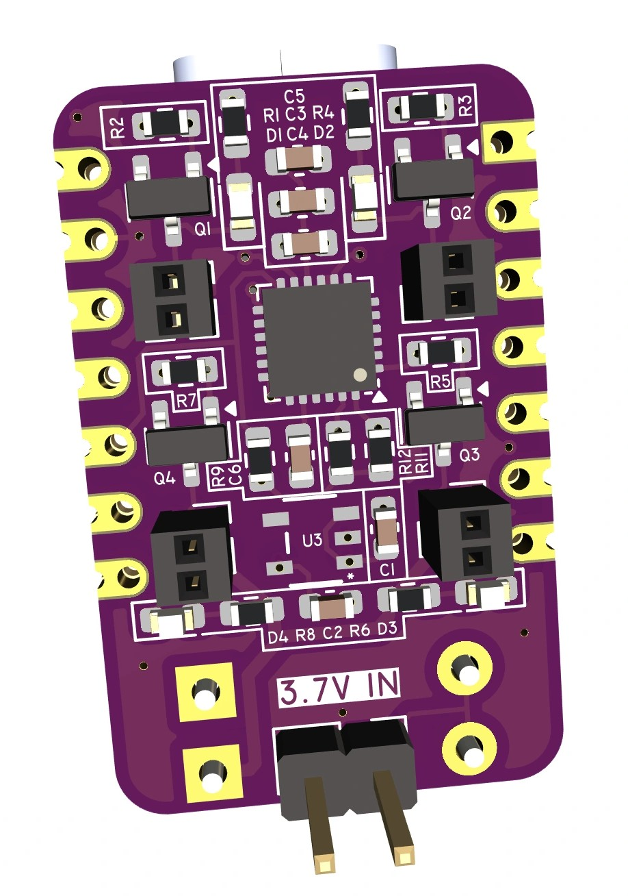
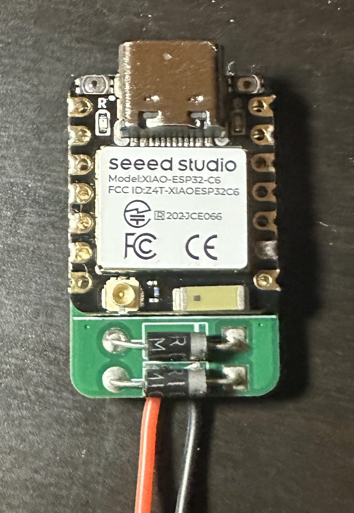
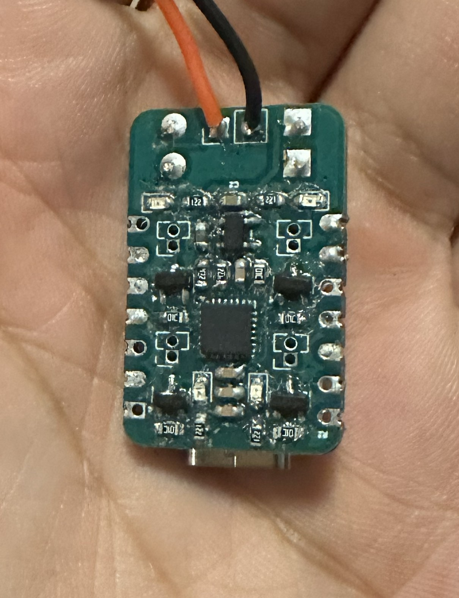
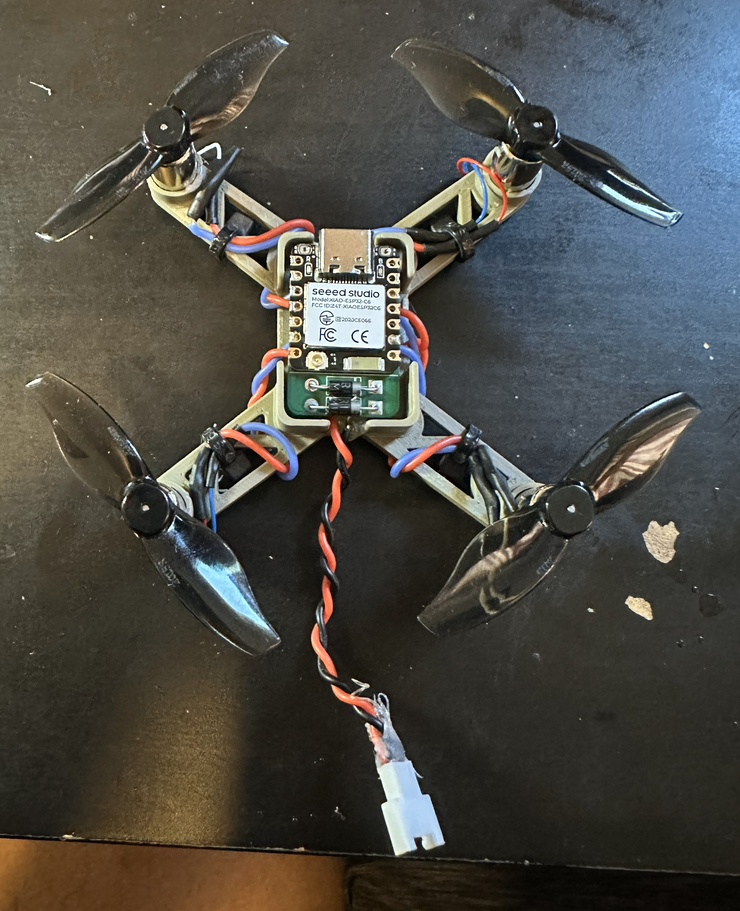

Mini Drone V2
2025 | In Progress
After some unsuccessful flight tests of my original drone, I realized I would have to make some modifications to be able to achieve flight.
Hardware
I started by designing a lower profile flight controller PCB which used the smaller ESP32-XIAO C6 microcontroller.
  This low-profile PCB fits behind the footprint of an ESP32, featuring a built in IMU with I2C communication, four motor drivers, and status LEDs
Initial thrust:
The PCB allowed for a much smaller and more symmetrical footprint. Additionally, I switched to smaller propellers.

Firmware & Controls
The firmware for thes project uses the ESP-IDF framework and freeRTOS for task scheduling. Core tasks include flight control + PWM setting, IMU reading and parsing, and periodic debug log value output. A webserver running in the background enables real-time data logging and user input.
Highlights:
- The MPU6050 IMU driver uses I2C and implements sensor fusion, using gyroscope + accelerometer data, and a Mahony filter to compute stable pitch + roll estimates. Additionally, I added an auto calibration feature that sets new pitch/roll offsets for accurate zeroing.
- Since I was now working in a multi-task, mixed frequency environment, traditional print debugging became messy. I implemented a global logging task that manages multiple data streams to display telemetry data at a consistent, organized rate.
Flight control algorithm: